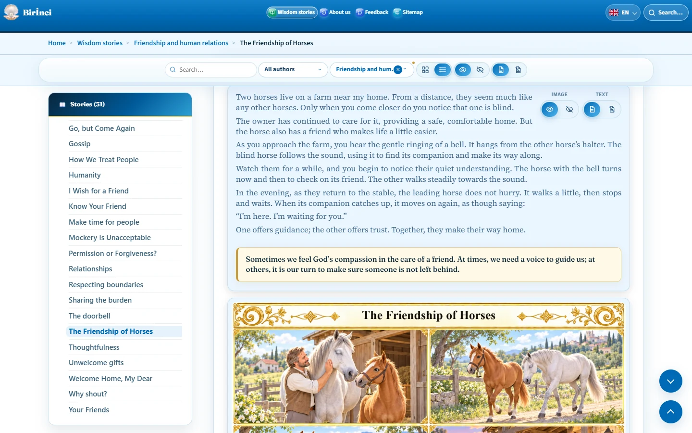

Story text and illustrations
A story contains a title, main text, moral and illustration. The moral is highlighted in a pale cream panel. Illustrations on story pages are visible on the first visit; you do not need to select “Show image” first.
Use the hide-image control to hide an illustration and the show-image control to restore it. Text has separate show and hide controls. Text and images cannot both be hidden: at least one must remain visible. On phones, text controls may be hidden while the text remains available to read.
Read the author credit and specific source where they are provided. The same generic source notice is no longer repeated beneath every story. A general note about editing and AI-generated illustrations may appear in the introduction; it is distinct from an individual story’s author credit.
After navigating to a story, copy the browser address to share it. Keep the # and story identifier at the end of the address, for example #friendship-of-horses.

